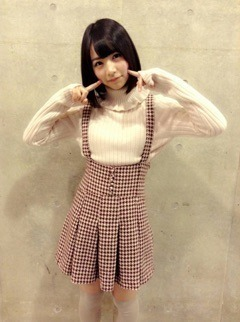

2015/0228Satストレート
みなさまこんばんわ！
ひなこだよー٩(◦`꒳´◦)۶♪
ブログ空いちゃってごめんなさい。。。
卒業試験やイベントやリハで
いっぱいいっぱいで、なかなか
ブログ書けませんでした( ºΔº )
1月後半から2月中、人生で1番勉強したおかげで卒業できるよ～٩(◦`꒳´◦)۶
わーいわーい٩(◦`꒳´◦)۶
いろいろなことがたまってしまったので、何回かにまとめて書きます。
まずはじめに、アルバム握手会のこと！
東京会場では、
1部 春のメロディー
2部 何度目の青空か？
3部 走れ！Bicycle
を、着ました！
春のメロディーは、
1部でみんな眠たいと思ったから
目が覚める色は？！！と、思い
青色を選んだよ！
りゃん
がぶっ
あげないよーっー
2部の何度目の青空か？は、衣装さんにあんまりぽくないから着てみたら？と、言われ着てみた♪
3部は着たかった衣装の1つ！ステージデビューの時は緑色だったけど、今回はピンクにした！
髪を巻く前！
京都会場は、
1部 あの日 僕は咄嗟に嘘をついた
2部 ぐるぐるカーテン
3部 制服のマネキン
あの日 僕は咄嗟に嘘をついたは、
地方で着たことがないと思って着ました！だから、初めて見る方も多かったみたいです！
ぐるぐるカーテンは、ライブ以外で着たことがなかったからきたよ♪
真顔でほっぺにつきさす
真顔でほっぺを押しすぎる
制服のマネキンは、好きな衣装の1つで皆んなに見て欲しかったから着ちゃった♪
次は個別握手会のこと！
1.2部がこれ！

まいちゅんが1人で写真とってたから
入り込んだ！
ねーねー、まいさん
ぐふふふふふ
このまいちゅんお姉さんみたい！
ぎっくり腰お大事に。
3.4部がこれ！
ルームウェア！
髪型はねこみみにゆる巻き
がおー
それから、1月お誕生日をまだのせていなかったので今日のせます！
遅くなってごめんなさいっ
お誕生日おめでとうございます！
2月お誕生日の方、もう過ぎてしまっていますが、名前を書いて下さったらうれしいです！
実は今日から2日間だけ、
家族であるところに来てるんです♪
また、報告します♪
おやすみなさいっ！
ねむそう～
前にでてきた
2015/0202Mon僕は今恋に落ちてゆく
みなさまこんばんわっ！
ひなこだよー٩(◦`꒳´◦)۶♪
今日は2月2日で、
二つ結びの日なので
二つ結びの写真だけを貼ったブログです(｡-_-｡)♡
いろいろなブログを書いてみたい！
って思ってやってみました！
ストレートちゅいんてーる
ルームウェアと高めちゅいんてーる
気づいたら片想いと
高めちゅいんてーる
セーラー服とちゅいんてーる
まあやさんと白ベレー帽と
ちゅいんてーる
白ベレー帽とちゅいんてーる
ろんぐなはーふちゅいん
なんとも言えないちゅいんてーる
ぷくっちゅいんてーる
ろんぐなはーふちゅいんてーると
抑えきれないニヤニヤ
ろんぐなちゅいんてーるが
お姉ちゃんをいじめる
セーラー服とちゅいんてーる
ななみさんが結んでくださった
はーふちゅいんてーる
じゅんなとみおなが結んでくれた
はーふちゅいんてーる
最後に、
ベラちゃんと変な顔の
ちゅいんてーる
ありがとうございました。
ちゃんちゃんっ
次は、1月お誕生日の方の名前のせます♡
おやすみなさいっ(｡・・｡)